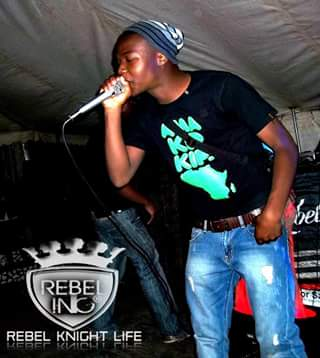

Representing: The EastRand
Craft: Rapper, Producer
Prolific AKA MizIAm is a versatile rapper hailing from the East Rand
He started rapping at the age of 15, recorded his first song at GAP studios,
now known as BlackCurtains in Dunnotar, East Rand.
Prolific Miz
"I do not mean to be too abstract but one of my favourite writers, Napoleon Hill,
Moore Mayhem
"I do not mean to be too abstract but one of my favourite writers, Napoleon Hill,
Frank Apollo
"I do not mean to be too abstract but one of my favourite writers, Napoleon Hill,
Von Intellekt